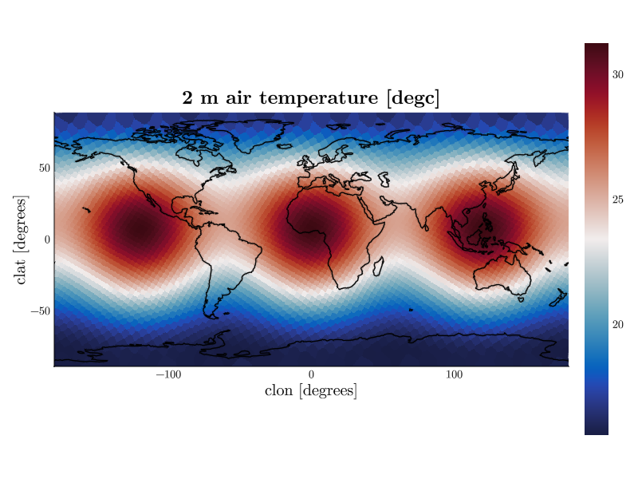
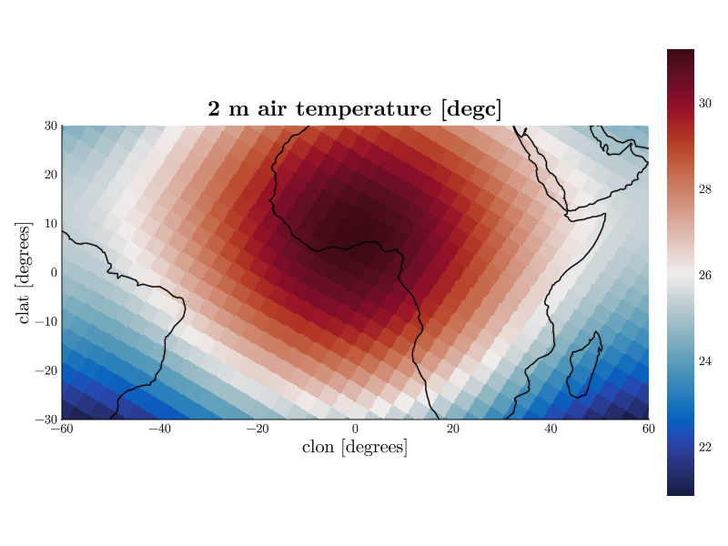

Unstructured Grids
Not all model output lives on a regular longitude × latitude grid. Models like ICON store their fields on an unstructured mesh: a variable has a single cell dimension (e.g. ncells), and the position of each cell is given by a pair of coordinate arrays (clon/clat) of the same length. CDFViewer handles such data transparently — you select clon and clat as plot axes like any other coordinate, and the cells are resampled onto a regular grid behind the scenes.
Opening ICON-style output
Our example atmos.nc stores the 2 m air temperature on an ncells dimension. The cell coordinates live in a separate grid file (see External grid files below), which is found and attached automatically:
cdfviewer atmos.ncatmos.nc — dims: time:12 ncells:4000
title: Unstructured demo output
grid file: icon_grid_0013_R02B04_G.nc
Coordinates:
clon [degrees] -179.969 … 179.93 (4000)
clat [degrees] -88.7188 … 88.7188 (4000)
time 2000-01-01 00:00:00 … 2000-01-12 00:00:00 (12)
Variable │ Dimensions │ Units │ Long name
──────────┼────────────────┼───────┼─────────────────────
temp2m │ clon,clat,time │ degc │ 2 m air temperatureThe coordinates clon/clat are now available as plot axes (radians are converted to degrees automatically):
CDFViewer> v temp2m
[ Info: Selected: temp2m
CDFViewer> x clon
[ Info: Selected: clon
CDFViewer> y clat
[ Info: Selected: clat
CDFViewer> p heatmap
[ Info: Selected: heatmap
Controlling the interpolation
Unstructured cells cannot be drawn as a regular image directly, so CDFViewer resamples them with nearest-neighbor interpolation onto a regular grid. By default, each axis gets 500 sample points spanning the full range of the coordinate.
Both the window and the resolution can be changed per coordinate with a range keyword argument of the form
coordinate = (start, stop, number_of_points)For example, to zoom the interpolation into the tropics, sample each axis with 500 points across the smaller window (giving a correspondingly finer resolution there), and match the axis limits to the window:
CDFViewer> clon=(-60, 60, 500), clat=(-30, 30, 500), limits=(-60, 60, -30, 30)
┌ Info: Current plot settings:
│ clon => (-60, 60, 500)
│ clat => (-30, 30, 500)
└ limits => (-60, 60, -30, 30)
del restores the default ranges and limits:
CDFViewer> del clon clat limits
[ Info: Current plot settings:Press Ctrl-I in the figure window to toggle interpolation on and off — useful to check what the raw cells look like. The kwargs range command lists the coordinates that accept a range keyword.
External grid files
ICON data files often reference coordinates they do not contain: the coordinates attribute names clon/clat, but the arrays themselves live in a separate grid file. When CDFViewer detects such missing coordinates, it attaches them from a grid file.
You can always name the grid file explicitly:
cdfviewer atmos.nc --grid /pool/data/ICON/grids/public/icon_grid_0013_R02B04_G.ncWithout --grid, the directory of the data file and all configured search directories are searched, in this order:
- by the file name in the data file's
grid_file_uriattribute, - by the
icon_grid_<NNNN>_*.ncnaming convention, - by comparing the
uuidOfHGridattribute of everyicon_grid*.nccandidate, - optionally (opt-in), by downloading the file from
grid_file_uri.
Every match is verified against the data file — the grid uuid and the dimension sizes must fit — before it is used. Automatic search can be disabled with --no-grid-search.
Search directories and the download option are set in the configuration file, e.g. to point at your own grid collection or a shared pool:
[grid]
search = true # master switch for automatic search
search_dirs = [
"~/grids", # your own grid collection
"/pool/data/ICON/grids/public", # e.g. the pool on Levante
]
download = false # opt-in: fetch grid_file_uri if not found
download_dir = "~/.cache/cdfviewer/grids"See Configuration for where this file lives.